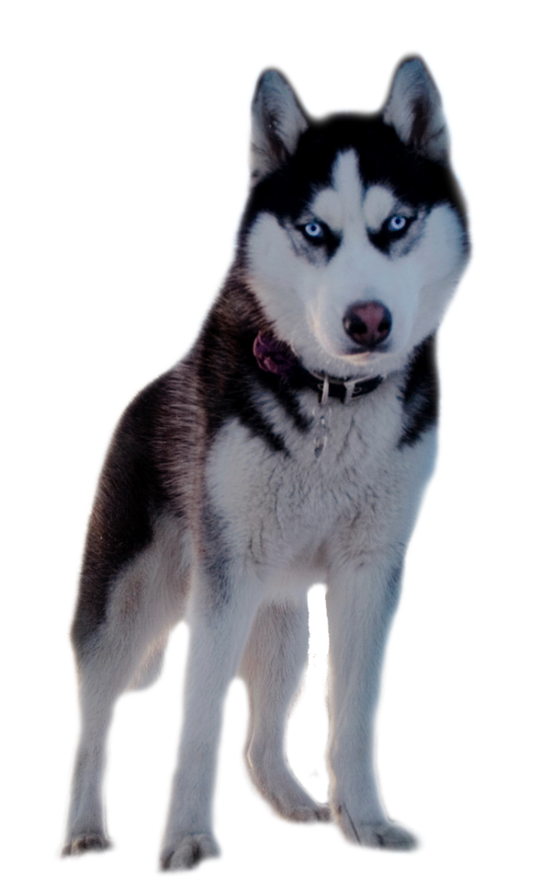
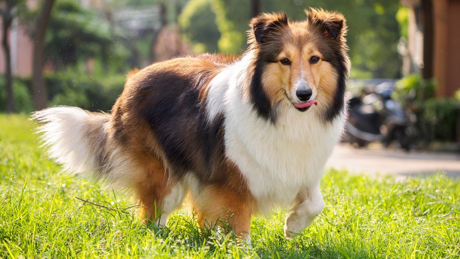
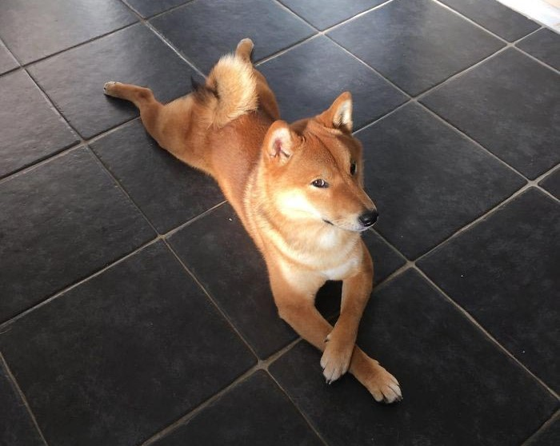
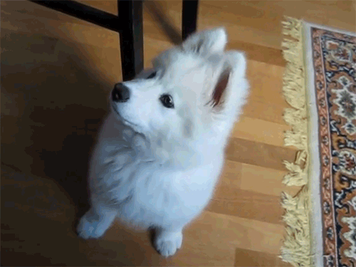

Самые милые породы собачек
| Порода | Характеристики породы | Фотография собачки |
| Сибирский хаски |
- Продолжительность жизни: 12 - 15 лет
- Весьма активные и практически постоянно находятся в движении
- Охотничий инстинкт сильный, но охотится собака для себя и добычу не приносит
- Отлично ладят с детьми любого возраста
- Склонны к побегам
|
 |
| Шелти |
- Продолжительность жизни: 12 - 15 лет
- Преданные, нежные и умные
- Настороженно относятся к незнакомцам
- Нуждаются в большом количестве внимания со стороны хозяина
- Чувствительная порода, которой необходимо быть частью дружной и любящей семьи
|
 |
| Золотистый ретривер |
- Продолжительность жизни: 10-13 лет
- Уравновешенные, умные и ласковые
- Доброжелательны к детям
- Любят активный образ жизни
- Любят работу, которая связана с охотой на птиц
|
 |
| Сиба-ину |
- Продолжительность жизни: 12 - 15 лет
- Страшные собственники, категорически не любят делиться
- С трудом поддаются дрессуре, претендуют на роль лидера и постоянно проверяют хозяина на прочность
- Любознательны, активны, становятся отличными компаньонами в путешествиях и занятиях спортом
- Не ладит с малышами, порода рекомендуется для детей старше 10 лет
|
 |
| Самоедская лайка |
- Вес: 15-30 кг
- Отличается покладистым характером, подвижностью, смелостью, дружелюбным отношением к людям и другим животным
- Плохо переносят одиночество
- Очень любят морепродукты
- Продолжительность жизни: 12-15 лет
|
 |